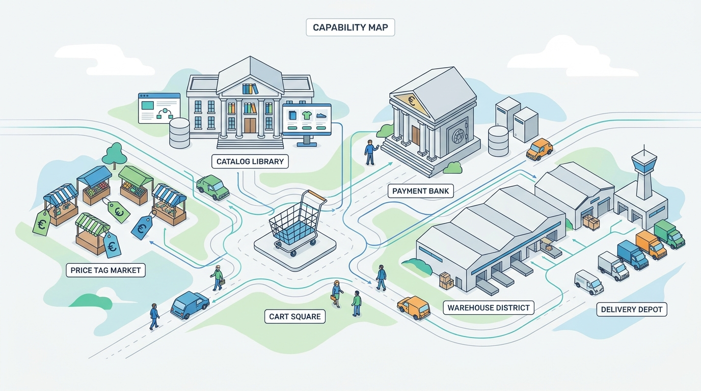

Part I — COMMERCE: What a Commerce Platform Is
The Map of a Commerce Platform: Capabilities and Layers
AI-assisted: researched and written with Claude Code, images generated with the Gemini API. How this works

Image generated by Google Gemini (gemini-3-pro-image-preview)